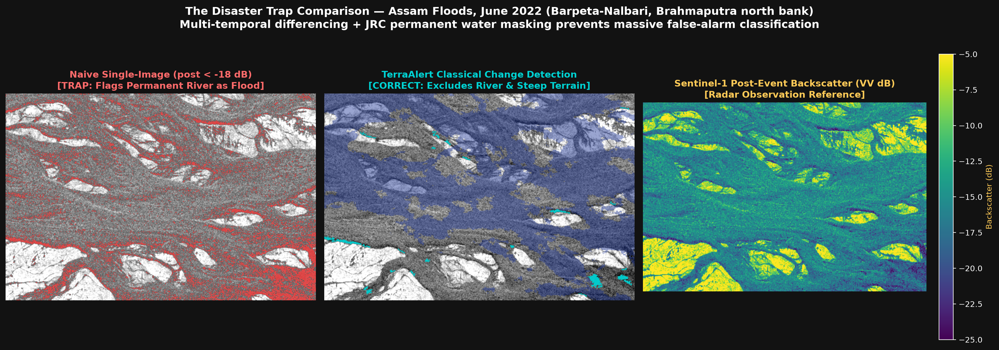

Event: Assam Floods, June 2022 (Barpeta-Nalbari, Brahmaputra north bank)
Area of Interest: 90.95, 26.1, 91.25, 26.37 (EPSG:4326) — Total AOI Area: 41.0 km²
Report generated: 2026-10-06 09:48 UTC
| Parameter | Value |
|---|---|
| Satellite / Instrument | Sentinel-1A / IW |
| Orbit direction | DESCENDING |
| Relative orbit | 150 |
| Pre-event dates | 2022-05-06 |
| Post-event dates | 2022-06-23 |
| Time gap | 48 days |
| Total AOI area | 41.0 km² |
Note: "People affected" is an estimate derived from WorldPop population count × zone flood fraction. It is not a direct count.
Urgent intervention recommended based on compound impact ranking:
| Rank | Zone Name / ID | Score | Tier | Flood Area (km²) | Affected People (est.) | Blocked Roads (km) | Isolated Facilities | Confidence |
|---|---|---|---|---|---|---|---|---|
| #1 | Grid-28-13 | 0.419 | P1 | 0.026 | 36 | 0.00 | 0 | Medium |
| #2 | Grid-0-11 | 0.413 | VERIFY | 0.026 | 36 | 0.00 | 0 | Low |
| #3 | Grid-12-15 | 0.387 | P1 | 0.016 | 40 | 0.00 | 0 | Medium |
| Rank | Zone | Score | Tier | Flood % | Flood km² | People (est.) | Facilities | Road km | Confidence |
|---|---|---|---|---|---|---|---|---|---|
| 1 | Grid-28-13 | 0.419 | P1 | 2.6% | 0.026 | 36 | 0 | 0.00 | Medium |
| 2 | Grid-0-11 | 0.413 | VERIFY | 2.6% | 0.026 | 36 | 0 | 0.00 | Low |
| 3 | Grid-12-15 | 0.387 | P1 | 1.6% | 0.016 | 40 | 0 | 0.00 | Medium |
| 4 | Grid-3-5 | 0.345 | P1 | 1.2% | 0.012 | 37 | 0 | 0.00 | Medium |
| 5 | Grid-21-30 | 0.326 | VERIFY | 5.5% | 0.023 | 3 | 0 | 0.00 | Low |
| 6 | Grid-4-7 | 0.313 | P1 | 2.0% | 0.020 | 27 | 0 | 0.00 | Medium |
| 7 | Grid-3-6 | 0.312 | P1 | 1.1% | 0.011 | 33 | 0 | 0.00 | Medium |
| 8 | Grid-21-18 | 0.287 | VERIFY | 1.4% | 0.014 | 28 | 0 | 0.00 | Low |
| 9 | Grid-12-24 | 0.270 | VERIFY | 1.5% | 0.015 | 25 | 0 | 0.00 | Low |
| 10 | Grid-20-30 | 0.254 | P2 | 3.7% | 0.016 | 7 | 0 | 0.00 | Medium |
These zones scored highly but have low detection confidence and require on-ground verification before committing resources.
| Zone | Tier | Score | Reason |
|---|---|---|---|
| Grid-0-11 | VERIFY | 0.413 | Flagged for on-ground verification: High impact (P1) with Low detection confidence |
| Grid-21-30 | VERIFY | 0.326 | Flagged for on-ground verification: High impact (P1) with Low detection confidence |
| Grid-21-18 | VERIFY | 0.287 | Flagged for on-ground verification: High impact (P1) with Low detection confidence |
| Grid-12-24 | VERIFY | 0.270 | Flagged for on-ground verification: High impact (P1) with Low detection confidence |
| Grid-4-3 | VERIFY | 0.233 | Flagged for on-ground verification: High impact (P2) with Low detection confidence |
| Grid-0-14 | VERIFY | 0.214 | Flagged for on-ground verification: High impact (P2) with Low detection confidence |
| Grid-24-30 | VERIFY | 0.210 | Flagged for on-ground verification: High impact (P2) with Low detection confidence |
| Grid-2-2 | VERIFY | 0.197 | Flagged for on-ground verification: High impact (P2) with Low detection confidence |
| Grid-8-6 | VERIFY | 0.189 | Flagged for on-ground verification: High impact (P2) with Low detection confidence |
| Grid-17-15 | VERIFY | 0.188 | Flagged for on-ground verification: High impact (P2) with Low detection confidence |
| Grid-8-4 | VERIFY | 0.184 | Flagged for on-ground verification: High impact (P2) with Low detection confidence |
| Confidence Level | Count | Percentage |
|---|---|---|
| Low | 22 | 53.7% |
| Medium | 19 | 46.3% |
| Metric | Value |
|---|---|
| naive | {'iou': 0.6969, 'precision': 0.9056, 'recall': 0.7515, 'f1': 0.8214, 'tp': 73755, 'fp': 7685, 'fn': 24388, 'tn': 67143, 'valid_pixels': 172971} |
| classical | {'iou': 0.5403, 'precision': 0.9099, 'recall': 0.5709, 'f1': 0.7016, 'tp': 56031, 'fp': 5551, 'fn': 42112, 'tn': 69277, 'valid_pixels': 172971} |
| reference | Sen1Floods11 (data/raw/LabelHand/) |
| overlap_aoi | False |
| experiment | Sen1Floods11 Ground-Truth Benchmark (Separate Experiment) |
| reference_dataset | Sen1Floods11 Hand-Labeled (India_1017769_LabelHand.tif) |
| reference_location | Nagaon / Brahmaputra Valley, Assam (26.60°N, 93.02°E) |
| chip_id | India_1017769 |
| aoi_overlap | False |
| aoi_disclaimer | Sen1Floods11 chips do not geographically overlap the Barpeta-Nalbari AOI. Zero accuracy is claimed on the project AOI per AGENT_CONTEXT rule 5. |
| pre_event_source | COPERNICUS/S1_GRD (May 2019, Relative Orbit 143, ASCENDING) |
| post_event_source | Sen1Floods11 S1Hand (July 2019, Relative Orbit 143, ASCENDING) |
| fused | {'status': 'not evaluated on AOI (no overlapping reference dataset)', 'aoi_disclaimer': 'Per AGENT_CONTEXT rule 5, zero accuracy claimed on AOI.'} |

This image illustrates why comparing pre-event and post-event imagery is essential: a single post-event image cannot distinguish permanent water from new flooding.
| Source | Licence |
|---|---|
| Sentinel-1 SAR (Copernicus / ESA) | Copernicus Open Access |
| Sentinel-2 MSI (Copernicus / ESA) | Copernicus Open Access |
| JRC Global Surface Water (Pekel et al.) | Copernicus Open Access |
| SRTM 30 m DEM (NASA) | Public domain |
| WorldPop UN-adjusted population count | CC-BY 4.0 |
| OpenStreetMap (roads, facilities) | ODbL 1.0 |
| Sen1Floods11 (Bonafilia et al.) | CC-BY 4.0 |
| Prithvi EO Foundation Models (IBM/NASA) | Apache 2.0 |
VERIFY exhibit high compound risk scores but low detection confidence; response teams should deploy ground scouts or drone reconnaissance before dispatching heavy equipment.